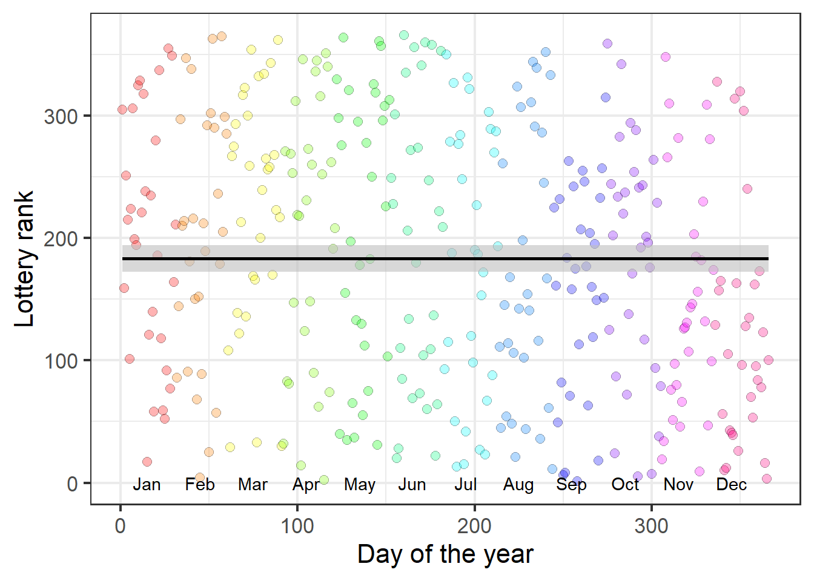
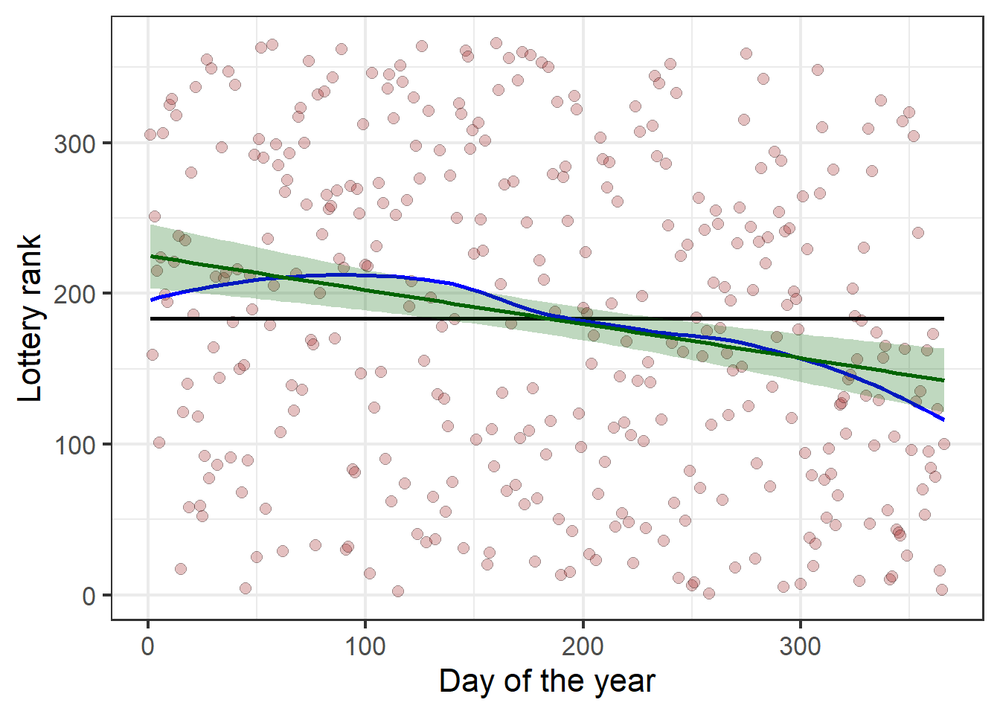

#/media/File:1969_draft_lottery_photo.jpg)
Shaken, not stirred
Although we often hear that data speak for themselves, their voices can be soft and sly. — Frederick Mosteller, Stephen Fienberg and Robert E. Rourke
The power of graphics is particularly evident when data contains a weak signal embedded in a field of noise. To the casual glance, there may seem to be nothing going on, but the signal can be made apparent in an incisive graph.
A dramatic example of this occurred in 1969 when the U.S. military conducted a lottery, the first since World War II, to determine which young men would be called up to serve in the Vietnam War for 1970. The U.S. Selective Service had devised a system to rank eligible men according to a random drawing of their birthdays. There were 366 blue plastic capsules containing birth dates placed in a transparent glass container and drawn by hand to assign ranked order-of-call numbers to all men within the 18-26 age range.
In an attempt to make the selection process also transparent, the proceeding was covered on radio, TV and film and the dates posted in order on a large display board. The first capsule—drawn by Congressman Alexander Pirnie (R-NY) of the House Armed Services Committee—contained the date September 14, so all men born on September 14 in any year between 1944 and 1950 were assigned lottery number 1. April 24 was drawn next, then December 30, February 14, and so on until June 8, selected last. I watched this with considerable interest because I was eligible for the Draft that year, and was dismayed when my birthday, May 7, came up ranked 35. Ugh!
The data are contained in the dataset Draft1970 in the vcdExtra package ordered by Month and birthdate (Day).
library(ggplot2)
data(Draft1970, package = "vcdExtra")
dplyr::glimpse(Draft1970)Rows: 366
Columns: 3
$ Day <int> 1, 2, 3, 4, 5, 6, 7, 8, 9, 10, 11, 12, 13, 14, 15, 16, 17, 18, 1…
$ Rank <int> 305, 159, 251, 215, 101, 224, 306, 199, 194, 325, 329, 221, 318,…
$ Month <ord> Jan, Jan, Jan, Jan, Jan, Jan, Jan, Jan, Jan, Jan, Jan, Jan, Jan,…A basic scatterplot, slightly prettified, is shown in ?@fig-draft-gg1. The ranks do seem to be completely random. Is there any reason to suspect a flaw in the selection process, as I firmly hoped at the time? If you stare at the graph long enough, you can make out a sparsity of points in the upper right corner and lower left corner compared to the opposite corners.

But, fitting a line or smoothed (loess) curve shows a definite trend to lower ranks for birthdays toward the end of the year:

Is this a real effect?
Even though the points seem to be random over the year, linear regression of Rank on Day shows a highly significant negative effect even though the correlation is small (\(R^2 = 0.051\)) The slope, -0.226, means that for each additional day in the year decreases about 1/4 rank toward the front of the draft line, nearly 7 ranks per month. On average,
draft.mod <- lm(Rank ~ Day, data=Draft1970)
summary(draft.mod)
Call:
lm(formula = Rank ~ Day, data = Draft1970)
Residuals:
Min 1Q Median 3Q Max
-210.758 -85.618 -1.756 84.612 196.150
Coefficients:
Estimate Std. Error t value Pr(>|t|)
(Intercept) 224.91341 10.81202 20.80 < 2e-16 ***
Day -0.22569 0.05106 -4.42 1.31e-05 ***
---
Signif. codes: 0 '***' 0.001 '**' 0.01 '*' 0.05 '.' 0.1 ' ' 1
Residual standard error: 103.2 on 364 degrees of freedom
Multiple R-squared: 0.05093, Adjusted R-squared: 0.04833
F-statistic: 19.54 on 1 and 364 DF, p-value: 1.305e-05What happened?